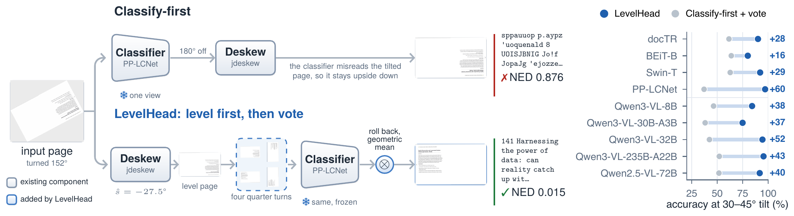
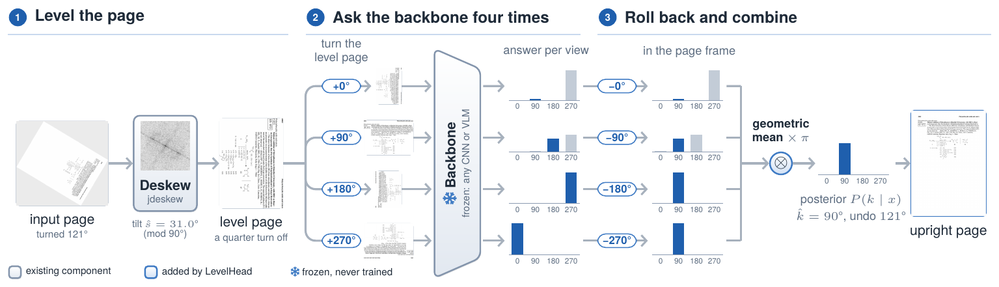
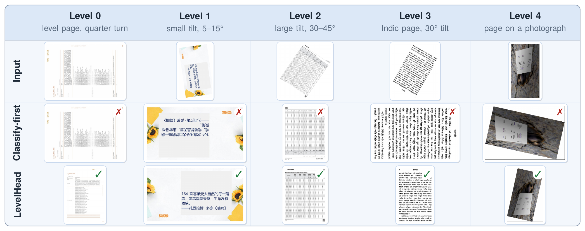
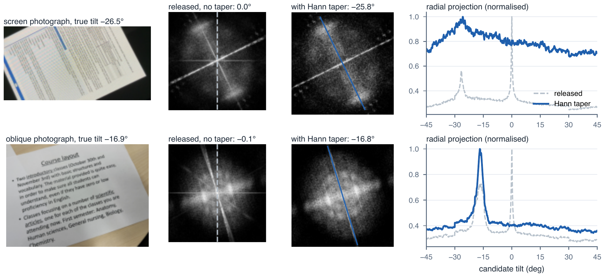
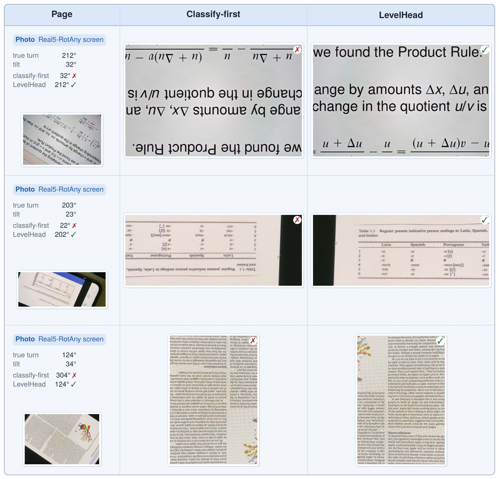

Level the page first, then let any frozen orientation model vote over its four quarter turns.
Anonymous authors · paper under review

TL;DR Pipelines pick a page's quarter turn first and remove its tilt second, so the classifier sees pages unlike any it was trained on. LevelHead swaps the order and votes over the four quarter turns of the level page. Nothing is trained.

| Setting | Classify-first | LevelHead | Gain |
|---|---|---|---|
| 4 classifiers, pages at any angle | 71.9 | 85.2 | +13.3 |
| 4 Qwen3-VL models, 7 benchmarks | 41.9 | 84.6 | +42.7 |
| GPT-4o-mini, 7 benchmarks | 34.3 | 69.9 | +35.6 |
| Gemma-4-31B, 7 benchmarks | 62.0 | 94.5 | +32.5 |
| DeepSeek-V4.1-Flash, 7 benchmarks | 68.8 | 96.5 | +27.7 |
| 4 classifiers, phone photos at any angle | 69.3 | 89.8 | +20.5 |
| 4 classifiers, DISE scans at any angle | 65.0 | 91.3 | +26.3 |


ORB receipts, Indic scripts and documents on photos, plus ODB-4 and ODB-any from all 1,651 OmniDocBench pages.
1,433 Real5 photographs turned by known quarter turns and angles.
2,800 DISE 2021 test scans with known skew, in all four quarter turns.

@misc{levelhead2026,
title = {Deskew Before You Classify: Training-Free Page Orientation for Any Model},
author = {Anonymous},
year = {2026},
note = {Under review}
}
Drop in a scan or a phone photo. Step 1 of LevelHead reads its tilt from the Fourier spectrum and levels it, right here, in about a tenth of a second.
Rows of text make a bright streak through the spectrum, perpendicular to the lines. The deskewer sums the spectrum along rays and picks the brightest. Switch the taper off to see the padding edge take over.
A real orientation classifier, PaddleOCR's PP-LCNet (7 MB), runs on your device. It scores each quarter turn of the level page; each bar is the probability that the view is turned that far counterclockwise.
View j was turned j quarter turns, so its answer is read j places along. A correct model now agrees column by column.
Everything above runs in this page: the deskewer in a Web Worker, the classifier with ONNX Runtime Web. The paper evaluates many backbones; this demo uses PP-LCNet, the most accurate classifier on level pages.
Drag the angle. See how it splits into a quarter turn and a tilt, and how often each order gets it right.
ODB-any, 1,651 pages. Both orders use the same deskewer and the same four-view vote.
| Backbone | Classify-first | LevelHead | Status |
|---|
Average accuracy (%) over seven public benchmarks. A model near chance (25%) even on level pages cannot be helped by any wrapper.